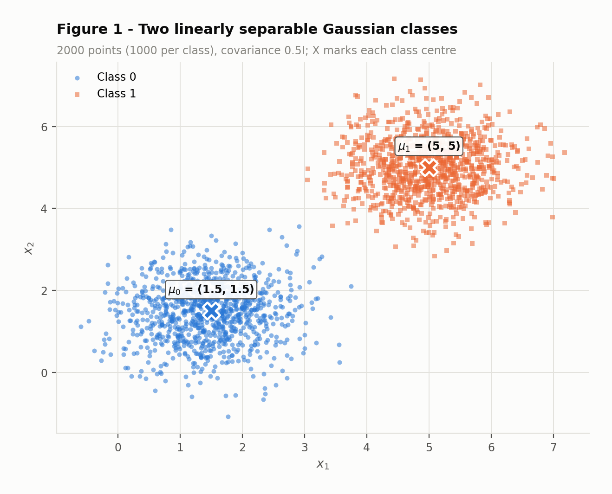
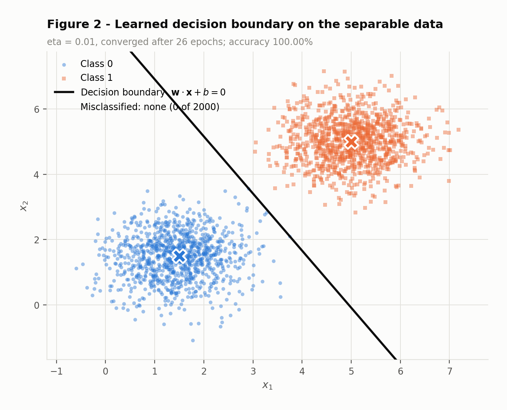
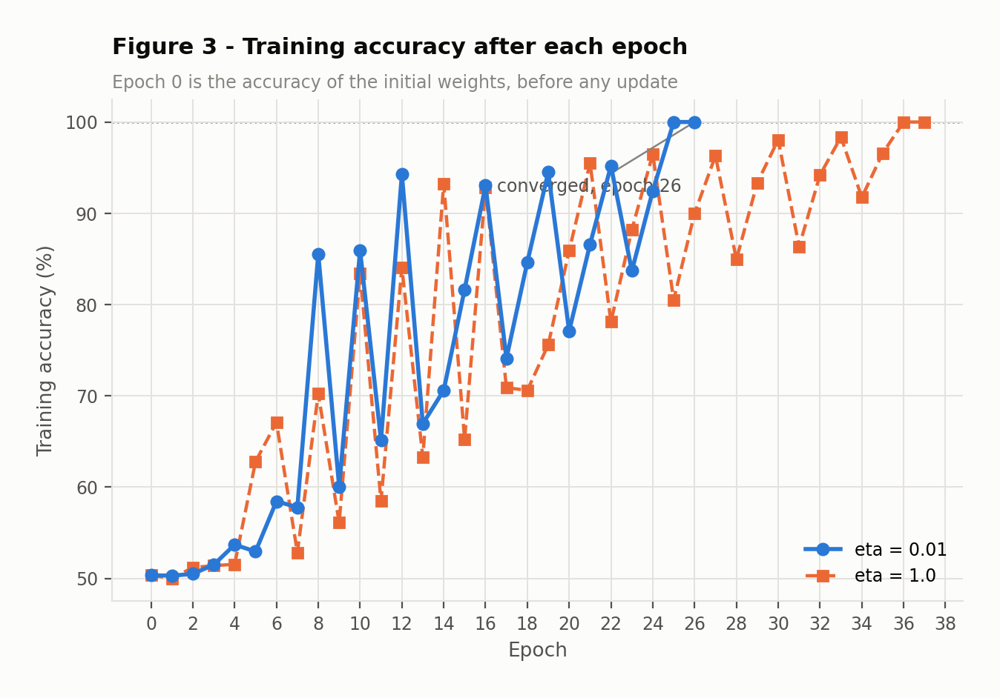
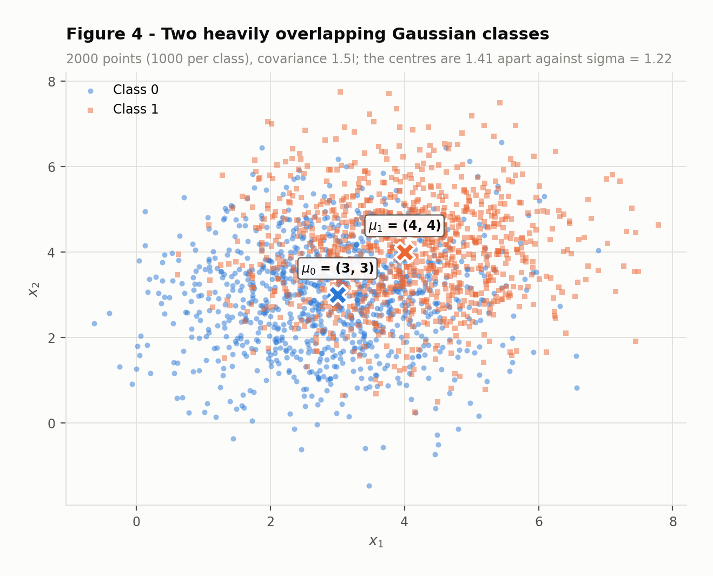
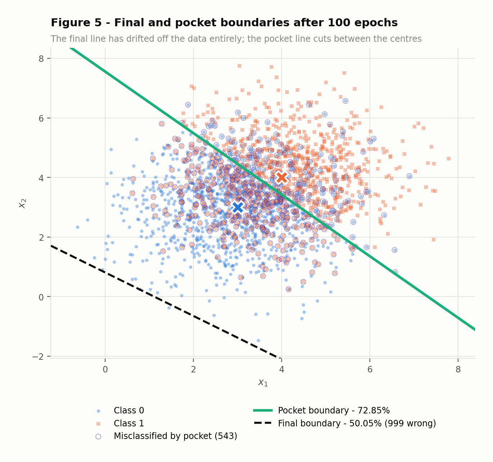
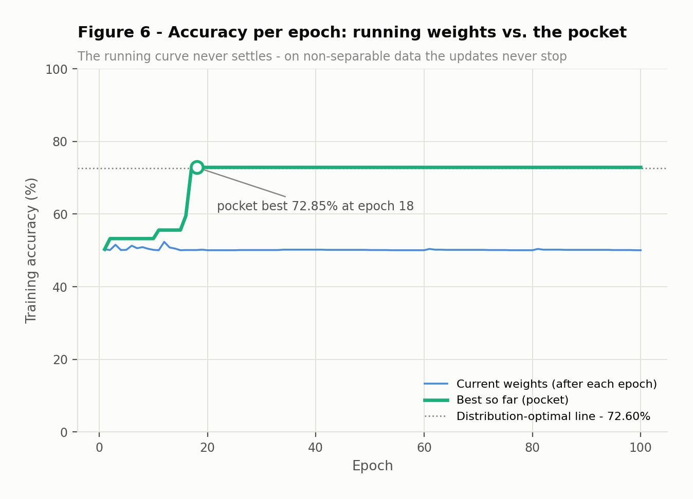
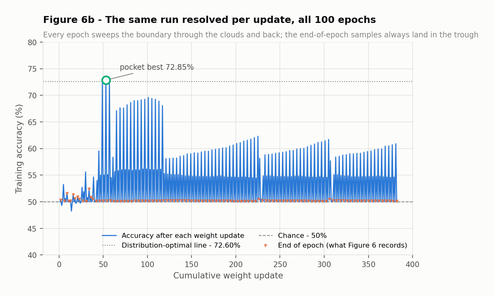

Exercise · Perceptron
The same short learning rule is run on two datasets. On the first it halts by itself with a perfect score. On the second it never halts at all, and the weights it happens to be holding when the epoch budget runs out are no better than a coin flip — while weights it passed through and discarded along the way were close to the best any straight line can do. That gap is what the pocket algorithm is for.
Both exercises call one function, fit in code/perceptron.py. Nothing is imported
beyond NumPy: the step activation, the update rule and the stopping test are all written out. Exercise 2 reuses
it completely unchanged — the only difference is that it passes pocket=True.
| Setting | Value |
|---|---|
| Learning rate η | 0.01 (and 1.0 for the re-run in 1D) |
| Weight init | rng.normal(0, 0.01, size=2) → (0.002532, 0.008952) |
| Bias init | 0.0 |
| Activation | step — output 1 if w·x + b ≥ 0, else 0 |
| Update | w += η(y − ŷ)x and b += η(y − ŷ), applied per sample |
| Stopping rule | a full epoch with zero updates, or 100 epochs |
| Seed | np.random.default_rng(42), drawn in a fixed order |
Labels are {0, 1} rather than {−1, +1}, so the error term
y − ŷ is +1 when a class-1 point was called 0, −1 in the
other direction, and 0 whenever the sample is already right. That last case is the important one:
a correctly classified sample changes nothing, which is what makes the stopping rule meaningful.
# --- the whole learning rule: predict, and only move on a mistake ---
for epoch in range(1, max_epochs + 1):
updates = 0
for i in range(X.shape[0]):
y_hat = 1 if (w @ X[i] + b) >= 0.0 else 0 # step activation
err = y[i] - y_hat # -1, 0 or +1
if err != 0: # correct samples do nothing
w += eta * err * X[i]
b += eta * err
updates += 1
if pocket: # Gallant's rule: score every change
a = accuracy(X, y, w, b)
if a > best_acc:
best_acc, best_w, best_b = a, w.copy(), b
acc = accuracy(X, y, w, b) # recorded once per epoch
curve.append(acc)
if updates == 0: # a clean pass: nothing left to learn
converged = True
breakThe samples are stacked class 0 first, class 1 second, and are not shuffled — the statement builds them that way. On separable data the order cannot affect the outcome. On overlapping data it very much affects which weights you end up holding, because every epoch ends right after a run of 1000 class-1 points. Section 2D takes that apart rather than hiding it.
One consequence is that the pocket has to be scored after every weight update, which is Gallant's original formulation, not once per epoch. Scoring per epoch would only ever sample the bottom of the sawtooth in Figure 6b and would report a pocket of about 52% instead of 72.85%.
Two spherical Gaussians, 1000 points each. Their centres are 4.9497 apart while each class has a per-axis σ of only 0.7071 — the centres are 7.0 standard deviations apart along the line joining them, far enough that the clouds never touch.
| n | Exercise 1 mean | Exercise 1 cov | Exercise 2 mean | Exercise 2 cov | |
|---|---|---|---|---|---|
| Class 0 | 1000 | (1.5, 1.5) | 0.5 · I | (3, 3) | 1.5 · I |
| Class 1 | 1000 | (5, 5) | 0.5 · I | (4, 4) | 1.5 · I |
| Centre distance | — | 4.9497 | 1.4142 | ||
| Per-axis σ | — | 0.7071 | 1.2247 |

As described in section 1, with η = 0.01, weights initialised to
(0.002532, 0.008952) and bias to 0, capped at 100 epochs.
The run ended on its own at epoch 26, not at the 100-epoch cap: that epoch produced no updates at all, so every one of the 2000 points was on the correct side and there was nothing left to change. The final state is w = (0.050497, 0.028872) and b = -0.2500.

w·x + b = 0 for the final weights, drawn over the data. No point is marked as misclassified because there are none — 100.00% of 2000. Note how close the line runs to the class-0 cloud: the perceptron stops at the first hyperplane that happens to be consistent, and makes no attempt to sit in the middle of the gap.
Because the update is error-driven. The term y − ŷ is zero for every correctly
classified sample, so a correct point contributes nothing at all — not a small gradient, exactly nothing.
Training therefore consumes itself: each mistake rotates and shifts the boundary towards the offending point,
and once no point is left on the wrong side the algorithm is a fixed point of its own update rule.
The numbers make the scale of this concrete. Over 26 epochs the loop looked at 52,000 samples and changed the weights only 73 times — 0.14% of presentations. Nearly all the work was already done.
Novikoff's theorem is what turns that into a guarantee. Writing the model in augmented coordinates
x̃ = [x, 1] so the bias folds into the weight vector, if some unit-norm w⃗* classifies
every sample with margin at least γ and every ||x̃|| ≤ R, then the total number of
mistakes is at most (R / γ)² — a bound that does not depend on how many samples
there are, or on η. Here a valid witness is the hyperplane with the same normal as the centre line, offset
to the middle of the empirical gap:
The bound is finite, which is the whole point — it guarantees termination. It is also extremely loose,
by about three orders of magnitude, and that looseness is honest rather than a bug: the augmented form inflates
R with an offset of roughly 5 while deflating γ, and the bound has to hold for the worst
possible ordering of the data. The qualitative claim it licenses is the one that matters: a wide gap means a
large γ, and a large γ means few mistakes.
It is worth noticing what the perceptron does not give you. The margin its own solution attains is 2.37e-04 — more than a hundred times smaller than the witness we used to prove it would terminate. It stops at the first consistent line, not the best one. That distinction is exactly what a support vector machine exists to fix.
Same data, same starting weights, only η changed.
| Run | Final w | Final b | Epochs | Accuracy | ||w|| |
|---|---|---|---|---|---|
| η = 0.01, random init | (0.050497, 0.028872) | -0.2500 | 26 | 100.00% | 0.0582 |
| η = 1.0, random init | (5.8706, 3.3592) | -31.0000 | 37 | 100.00% | 6.7638 |
| η = 0.01, zero init | (0.058681, 0.033503) | -0.3100 | 37 | 100.00% | |
| η = 1.0, zero init | (5.8681, 3.3503) | -31.0000 | 37 | 100.00% |
| Run | w / ||w|| | ||w|| |
|---|---|---|
| η = 0.01 | (0.868123, 0.496349) | 0.0582 |
| η = 1.0 | (0.867950, 0.496652) | 6.7638 |
| Angle between them | 0.0200° | |
| Ratio of norms | 116.28× |
Both reach 100.00%. The weight directions are the same to within
0.0200°, while the norms differ by a factor of 116. So η bought
scale, not a different classifier — multiplying w and b by any positive constant leaves the
set w·x + b = 0 untouched and every prediction with it.
The one real difference is the epoch count: 26 at η = 0.01 against 37 at η = 1.0. It would be easy to read that as "the small learning rate is faster", but the last two rows of the table show it is nothing of the kind. Started from w = 0 both learning rates take exactly 37 epochs. The 26-epoch run is the odd one out, and the reason is the initialisation, not the rate:
At η = 1.0 the initial weights are wiped out by the first update, so the run is indistinguishable from starting at zero — and indeed it takes the same 37 epochs. At η = 0.01 the initial vector is 0.20× the size of one update and survives long enough to matter; here it happened to point somewhere useful and saved 11 epochs. That is luck, not a property of the learning rate.
So what does η control? Only the scale of w, and through it the single ratio
||w₀|| / (η·||x||) — how quickly the updates drown out whatever the weights
were initialised to. It does not change the direction the weights converge to, the decision boundary, or the
classification of any point.
Claim: run the algorithm twice on the same data in the same order, once with η₁ and once with η₂, both from w = 0, b = 0. Then at every step w(2) = c · w(1) and b(2) = c · b(1), with c = η₂/η₁ > 0.
Proof by induction on the number of samples processed.
Base case. Both runs start at w = 0 and b = 0, and 0 = c · 0 for any c. The relation holds.
Inductive step. Suppose it holds before some sample x. The second run's activation is
Since c > 0, multiplying by c cannot change a sign, so
w(2)·x + b(2) ≥ 0 exactly when
w(1)·x + b(1) ≥ 0. Both runs therefore emit the same
prediction ŷ, hence the same error e = y − ŷ, and in particular they update on
precisely the same samples. Applying the rule:
which is the relation again, one step later. By induction it holds for the entire run. □
Three consequences follow immediately. The two runs make identical predictions at every step, so they
misclassify the same samples in the same order and their accuracy curves are equal; the epoch on which a pass
first produces no updates is therefore the same, so the epoch count is identical; and since
{x : c(w·x + b) = 0} is the same set as {x : w·x + b = 0} for
c > 0, the decision boundary is identical. Only ||w|| differs, by the factor
c.
The code checks this rather than asserting it. Running from zero at η = 0.01 and η = 1.0 gives weights whose largest componentwise discrepancy from the predicted factor of 100 is 1.07e-14 — floating-point noise — with identical epoch counts (37 and 37) and, verified elementwise, identical accuracy curves.
The proof needs w = 0 as its base case. That is precisely why the statement asks for a non-zero initialisation: it breaks the scaling relation and makes η observable at all. What we measured above — 26 epochs versus 37 — is the size of that broken symmetry, and it vanishes the moment the initialisation does.
The same construction with the geometry inverted: the centres move closer, from 4.95 apart to 1.4142, while the spread triples, from σ = 0.7071 to 1.2247. Where Exercise 1 had its centres 7.0 standard deviations apart, here they are only 1.15 — so the clouds do not merely touch, they sit almost on top of one another.

The implementation from Exercise 1 is imported unchanged, with the same η = 0.01 and the same 100-epoch cap. The only addition is the pocket: a copy of the best weights seen so far, updated whenever the running weights score higher on the full training set. The pocket never feeds back into training — it only records.
| Weights | w | b | Accuracy | Misclassified |
|---|---|---|---|---|
| Final weights | (0.036057, 0.049421) | -0.0400 | 50.05% | 999 |
| Pocket weights | (0.006841, 0.006620) | -0.0500 | 72.85% | 543 |
| Bisector of the centres | (0.707107, 0.707107) | -4.9497 | 72.60% | 548 |
The run did not stop early: all 100 epochs executed, and the smallest number of updates in any single epoch was 2, never zero. The pocket reached 72.85% at epoch 18 and was never beaten in the 82 epochs that followed.


Figure 6 raises an obvious question: if the running weights hover at 50% for all 100 epochs, where did the pocket's 72.85% come from? The answer is that once-per-epoch sampling hides the dynamics.

The proximate cause is that on non-separable data there is no fixed point. Updates never stop, so the final weights are not a solution the algorithm settled on — they are just wherever it happened to be standing when the epoch counter ran out. Since every epoch ends with 1000 consecutive class-1 samples, that moment is systematically the worst one in the cycle.
The mechanism is in the relative size of the two updates. A mistake moves the weight vector by
ηx but the bias by only η:
That ratio is decisive, because the boundary's distance from the origin is
−b / ||w||, and for the line to pass through the clouds that quantity has to reach the
projection of the cloud centre — about 4.9. The bias accumulates 5.1 times more slowly
than ||w|| grows, so the ratio it can sustain is of order 1, not of order 5:
| Weights | ||w|| | b | −b / ||w|| | Needed | Accuracy |
|---|---|---|---|---|---|
| Final | 0.061176 | -0.0400 | 0.6538 | 4.8903 | 50.05% |
| 0.009520 | -0.0500 | 5.2521 | 4.9491 | 72.85% |
The final weights sit at 0.65 when they would need
4.89 — the line is nowhere near the data, which is why it labels essentially
everything class 1 and scores 50.05%. The pocket weights sit at 5.25
against a required 4.95, which is in range, and score 72.85%. Notice how
the pocket got there: its ||w|| is 6.4 times smaller, so the
same small bias buys a much larger offset. Those configurations are transient — the very next mistake
inflates ||w|| again — which is precisely why they have to be caught and stored as they go
past. Of the 382 updates in the run, only 40 ever exceeded 60%
and 3 exceeded 70%.
So the 72.85% against 50.05% is not the pocket being clever. It is the pocket keeping a receipt for a good moment that the algorithm itself has no way to recognise or hold on to.
Figure 3 is a damped oscillation that terminates: the swings shrink, the curve reaches 100%, an epoch passes with no updates, and training ends at epoch 26. Figure 6 is an undamped one that does not: after 100 epochs the curve is still moving between 50.05% and 52.35%, and every epoch still produces updates. Nothing about it is converging, and running it longer would not change that.
The perceptron convergence theorem requires two things:
R with ||x̃|| ≤ R for every sample.
This dataset satisfies it comfortably; the norms are finite and small.ỹ(w*·x̃) ≥ γ for every sample. This is the assumption that
fails.It fails structurally, not by accident of sampling. Two Gaussians have overlapping support: whatever line
you pick, both classes have probability mass on both sides of it. The optimal linear rule for these two
distributions — the perpendicular bisector of the centres, since the covariances are equal and spherical
— still misclassifies 548 of the 2000 points, for
72.60% accuracy. The theoretical ceiling, from
Φ(d / 2σ) with d = 1.4142 and
σ = 1.2247, is 71.81%.
With no γ > 0 to speak of, (R/γ)² is unbounded. The theorem does not give a
weaker guarantee in this regime — it gives none, and the behaviour in Figure 6 is what "none" looks like.
The algorithm keeps finding mistakes because mistakes genuinely exist, and it is built to respond to every one
of them.
The pocket's 72.85%, incidentally, is marginally above the bisector's 72.60%. That is not a contradiction: the bisector is optimal for the distributions, while the pocket is chosen by looking at this particular finite sample, and 2000 points leave room for that much slack.
Neither, and the update rule says so without needing an experiment.
More epochs. The stopping rule fires when an epoch produces zero updates. An update fires on every misclassified sample. Since the classes overlap, every possible weight vector misclassifies a positive fraction of the data — even the best line found in this whole run still gets 543 of the 2000 wrong — so the number of mistakes per epoch is bounded below by a positive number that no amount of training can reduce. A zero-update epoch is therefore unreachable, and the run is guaranteed to exit on the cap at any budget. The evidence is already in the results: the smallest number of updates in any of the 100 epochs was 2, and the pocket's best arrived at epoch 18 and was not improved once in the 82 epochs after it. More epochs buy more lottery tickets for the pocket, with diminishing returns. They do not buy convergence.
A smaller η. The zero-initialisation proof in Exercise 1D is the complete
answer. From a zero initialisation, changing
η rescales the entire weight trajectory by a positive constant and changes no prediction anywhere —
the boundary and the mistake sequence are literally identical. A learning rate cannot fix non-convergence
because it is not a parameter of the decision boundary at all; only w/||w|| and
b/||w|| are, and scaling every update by the same constant leaves both alone. With the non-zero
initialisation used here, shrinking η does one thing: it makes w₀ relatively more
important for longer. That is a perturbation, not a cure, and it certainly cannot manufacture a separating
hyperplane that does not exist.
What would actually help is changing what is being optimised, not how fast:
Because the data is not shuffled, the 50.05% figure is partly an artefact of when we look: every epoch ends just after 1000 class-1 points. Shuffling would make the final weights land somewhere less systematically bad, and the final-versus-pocket gap would narrow. It would not change the conclusion. The run would still never converge, the accuracy would still oscillate rather than settle, and the pocket would still be necessary — because none of that depends on the order, only on the overlap.
| # | Quantity | Value |
|---|---|---|
| 1 | Exercise 1 — final weights w and bias b | w = (0.050497, 0.028872), b = -0.2500 |
| 2 | Exercise 1 — epochs to convergence | 26 (stopped on a zero-update epoch, not the 100-epoch cap) |
| 3 | Exercise 1 — final accuracy | 100.00% (2000 / 2000 correct) |
| 4 | Exercise 1 — epochs and accuracy with η = 1.0 | 37 epochs, 100.00% |
| 5 | Exercise 2 — final weights w and bias b | w = (0.036057, 0.049421), b = -0.0400 |
| 6 | Exercise 2 — accuracy of the final weights | 50.05% (999 / 2000 wrong) |
| 7 | Exercise 2 — accuracy of the pocket weights | 72.85% (543 / 2000 wrong) |
| 8 | Exercise 2 — epoch at which the pocket best occurred | epoch 18 (weight update 53 of 382) |
Two scripts produce every figure and every number above; a third renders this page from their JSON output.
The seed is 42 and each script draws from its own generator in a fixed order, so the results are
identical between runs and each exercise can be run on its own.
git clone https://github.com/leosfreitas/ann-dl
cd ann-dl
pip install numpy matplotlib
cd code
python perceptron_ex1.py # Figures 1, 2, 3 + results/perceptron1.json
python perceptron_ex2.py # Figures 4, 5, 6, 6b + results/perceptron2.json
python build_perceptron_report.py # renders exercises/perceptron/index.htmlThe perceptron itself lives in code/perceptron.py and is written from scratch — NumPy is
used for array arithmetic and the random generator, Matplotlib for the figures, and nothing else. No
third-party model is imported or trained anywhere in this exercise.